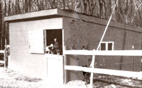

Making a chicken coop from scratch
ONE DAY A FRIEND WHO WORKS FOR A construction company asked us, "Could you use some damaged garage-door sections?" Of course, we said yes. We've built a reputation for being "scroungers" and we will accept (as long as it is free) anything useful that people are throwing away. The discovery of those door sections happened to coincide with a need to build a new shelter for our chickens. Some real possibilities became apparent, and all we had to do was haul them home.
That was the beginning for our 16' x 16' chicken shed, which we built for practically nothing. The only money we spent was about $100 for the 18'-long rafters (we simply couldn't find used ones), a few 2x4s and 1x6s, and gas for the truck when we hauled the materials.
The foundation was built of old railroad ties, which we had acquired free from a friend some time before. The window was my sister's "find"-she spotted it in her neighbor's trash pile. The metal roofing and scrap lumber had come from an old shed that was being torn down. The roofing had numerous holes and rust spots, but with a pail of rooting tar, we managed to plug most of them. The roof was then about 95% waterproof, and the chickens have never seemed to mind. The nesting boxes for the interior we got from a nearby farmer who no longer needed them. The only item we lack is a window for the front, and as soon as we spot one that isn't in use, the chickens will have a view. We found the garage-door sections to be excellent siding material. We had 18 of them, 16' long, 21" wide and 1-3/8" thick. These "flush garage door sections" have a hollow core and are made of a hardboard covering. The sections have tongue and groove joints. Once the framework was up, the door sections were fun to work with because they fit together so nicely. The doors provide good insulation, too. Ordinarily, chickens don't lay well in cold weather, but our Rhode Island Reds produced well even during below-zero weather. Of course, the chickens didn't have the whole shed to themselves, we used it for storage too!
List of Materials
8 railroad ties (8' long)
3 9' 2x4s
8 8' 2x4s
4 7 2x4s
9 18' 2x8s
1 8 flush garage-door sections
1window
10 16' 1x6s for roof (salvaged lumber)
1x6s and 1x4s for door trim as needed
1x10s for eaves (we also used scrap plywood)
metal roofing sheets (27-1/2"x 10') hinges and hardware for doors
1. Set foundations. We set the ties halfway into the ground. (This was the hardest part of the whole project, as we had to be sure they were all level.)
2. Toenail studs to railroad ties. We put them at the corners and at 4' intervals, except where we wanted doors and windows. The door sections are extremely rigid, and don't need any more support than this.
3. Toenail joists to studs.
4. Nail up garage doors. We picked the "best side out" where they would show. Five sections were put in front and four in back. One section was cut on the diagonal for the slant of the roof. This exposed the hollow core, which we plugged with wood and then glued and nailed.
5. Cut doors and windows. We put in two dutch doors wide enough for the garden tractor.
6. Install rafters on edge.
7. Nail roof boards in place. These were put across the rafters with spaces in between.
8. Nail on metal roofing and patched holes with tar.
9. Finishing touches. We boxed in the eaves and installed the window, then constructed and hung the dutch doors. We used the sections cut out for a door opening.
10. Paint shed. This took only one coat, as most of the door sections already had a primer coat.
Perhaps you won't be as lucky as we were in acquiring so many of the materials at the "right price." But the point is, we got the ma terials and then fit our building plans around them, not the other way around. If you're going to save money on buildings of this type, you must be inventive and open to many possibilities (always keeping in mind local building codes). The greatest fun of any project like this is to make something out of nothing.
|
 |
|
|